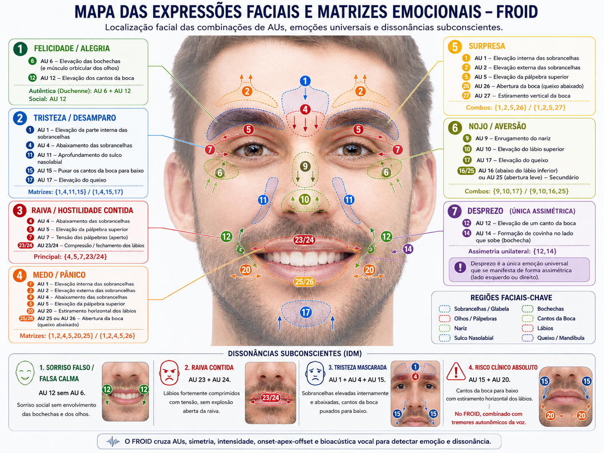

Interactive demo
Three interactive pieces: the 12 Zones map, the IPM and IDM indices reacting to a simulated dissonance, and an anonymous sample report. All data here is illustrative and synthetic.
FROID proprietary framework
Each zone corresponds to a note of the chromatic scale (from C2 to C#7) and to a dichotomy between a limiting state and an expansive one. Click a zone to see the detail. The physics (spectral energy) is real; the theme↔band mapping is a product heuristic — not published neuroscience.
Real-time indices
Play a simulated session. The IPM (energy/vitality) oscillates continuously; the IDM (coherence) stays low until a moment of dissonance — when the patient holds a voluntary smile over vocal tension — and then jumps into the alert range.
After the session
Upon ending, the professional receives a structured report, always compared against the patient's own baseline. Synthetic example below.
Blue line: IPM over time. Red marker: IDM peak (speech–face incongruence) for the clinician to review.
At 31 min, vocal infra-tremor tension (5–12 Hz) coincided with a voluntarily configured smile (AU12 without AU6) while speaking about professional recognition — a signal of possible Somatoaffective Dissonance. Suggested for exploration, at the professional's discretion.
Product gallery
An overview of the analysis capabilities. All captures use synthetic data; several panels are proprietary visualization heuristics — support for reading, never diagnosis. See Ethics and Science.
